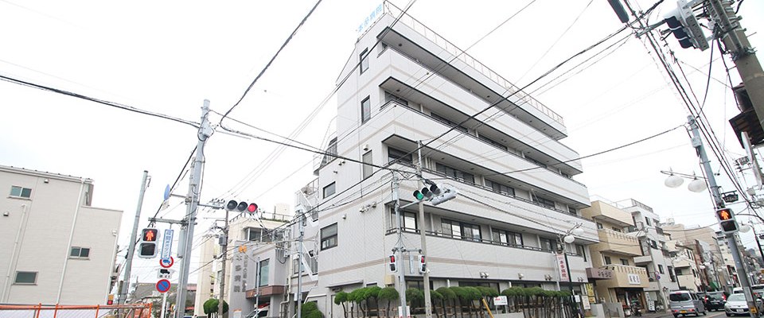
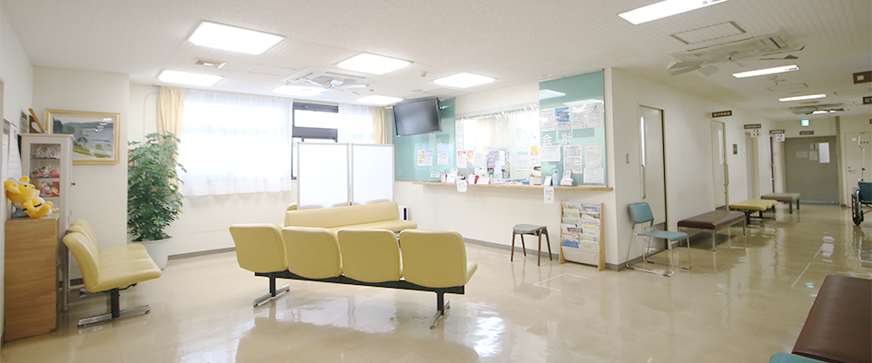
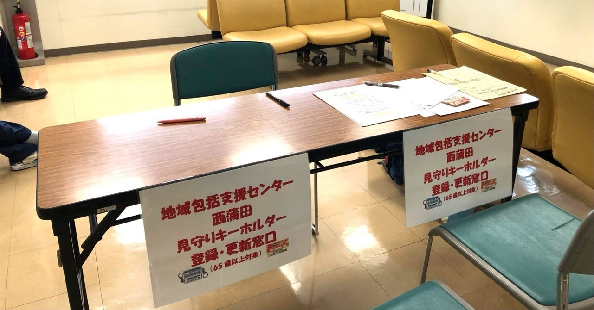
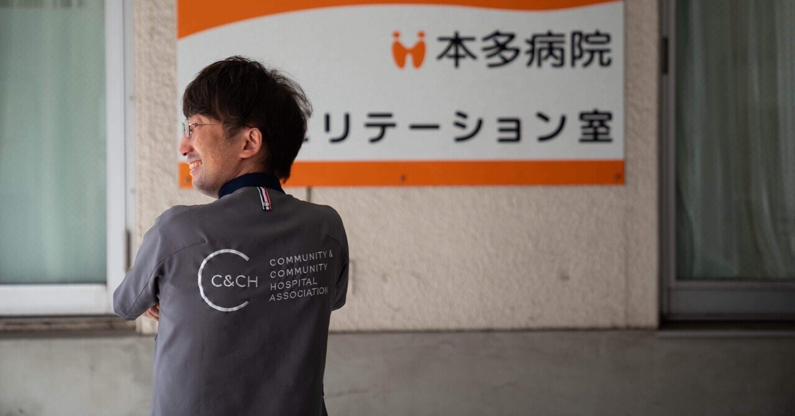
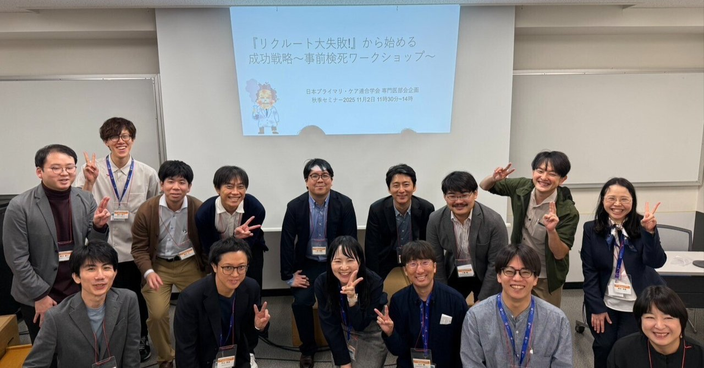

治すだけでなく、支える医療を。外来・入院・リハビリテーションをこの場所でつなぎ、蓮沼のまちで暮らし続ける人の毎日を支えています。
はじめての方へ病気になってから出会う場所ではなく、
病気になる前も、その後も。
「ここがあるから大丈夫」と思える病院でありたい。
私たちは総合診療を軸に、外来・入院・リハビリテーションをワンストップで提供するコミュニティホスピタルです。病気だけを診るのではなく、その人の暮らしと人生を診る医療を、大田区・蓮沼のまちで実践しています。
通院する・家に来てもらう・入院する。暮らしの状態に合わせて、必要な医療を選べます。

初診の流れ・持ち物・各診療科の担当医表
外来のご案内
訪問診療の対象・ご相談の流れ・対応エリア
在宅医療のご案内
入院の準備・費用の目安・面会時間のご案内
入院のご案内健診をご希望の方は 健診のご案内 をご覧ください。
※健診ページの扱いは確認中です（新しいサイト構成案に含まれていないため）

運動器（Ⅱ）・呼吸器（Ⅰ）・脳血管疾患等（Ⅲ）のリハビリテーションに対応。理学療法士・作業療法士・言語聴覚士が、医師・看護師・管理栄養士とひとつのチームになって、退院後の暮らしまで見据えた回復を支えます。
心臓リハビリテーション指導士も在籍し、生活習慣病や心疾患のある方の「運動の処方」にも取り組んでいます。
リハビリテーションについて病院の中だけでは、人の暮らしは支えきれません。お祭り、健康講座、地域の見守り。まちの人・多職種とつながる場をつくっています。
診療科によっては休診の情報が反映されていない場合があります。お越しの前にお電話でお確かめください。
| 診療受付時間 | MON | TUE | WED | THU | FRI | SAT | SUN |
|---|---|---|---|---|---|---|---|
| 午前9:00 – 12:00 | ● | ● | ● | ● | ● | ● | – |
| 午後15:00 – 17:00 | – | – | ● | – | ● | – | – |
休診日：日曜・祝日・土曜日午後 ／ 急患は24時間受付けます。まずはお電話にてお問い合わせください。 ／ 各種保険取扱・マイナ受付対応
休日・全夜間診療事業実施医療機関、東京都脳卒中急性期医療機関の指定を受けています。
CTスキャナシステム、X線透視撮影装置、超音波診断装置（心臓・胸腹部ほか）を備えています。
労災保険・生活保護の指定医療機関。関連施設のケアマネオフィス・老健とも連携しています。
どんな人が診てくれるのかが分かることは、それだけで安心につながります。医師・看護師・リハビリスタッフの顔と、考えていることを紹介します。
